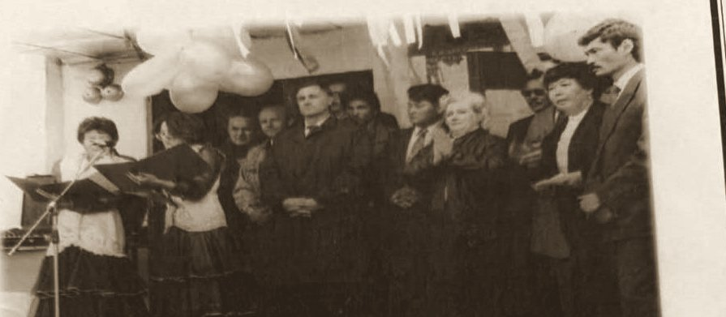
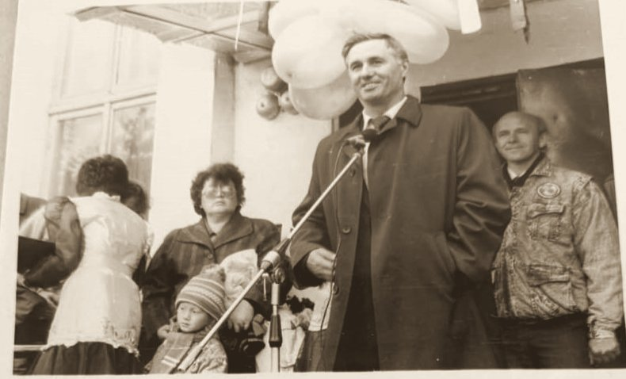
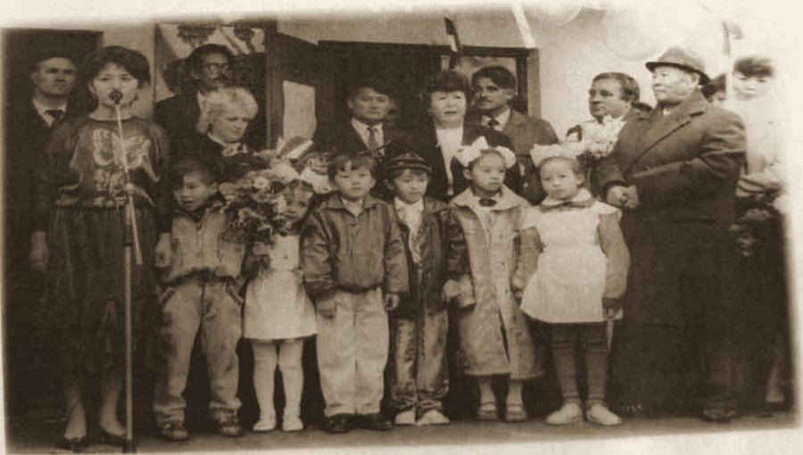
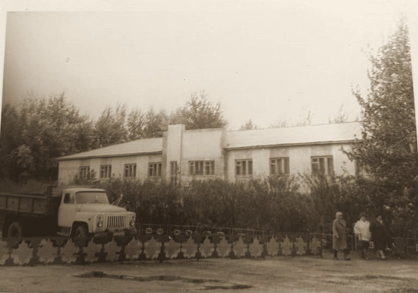
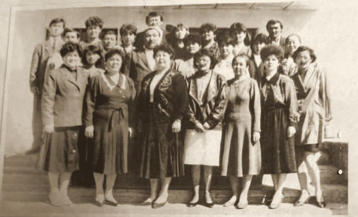
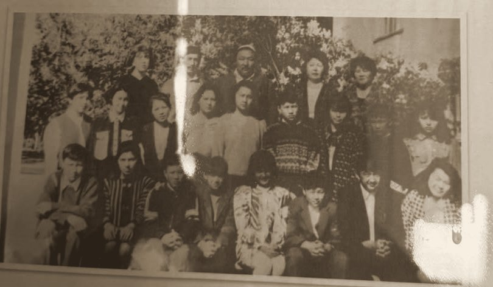
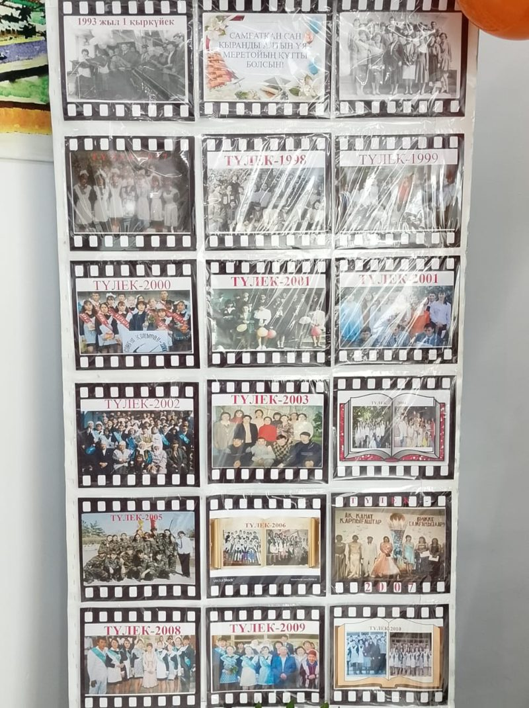

«Менің кіші Отаным» · Тұлға және дәуір · цифрлық тарихи портрет
1993 жылғы 1 қыркүйекте ауылдағы жаңа мектептің есігін ашқан адам. Тәуелсіздіктің ең ауыр жылдарында ол мектеп ұжымын құрып, балаларға білім берудің жолын салды.

I · Тұлға
Мектеп мұрағатындағы мұғалімнің жеке іс парағы үлгісімен жасалды. Мұражай стендінде расталған деректер қарапайым мәтінмен, әлі тексерілетін деректер сары түспен берілген.
Қазыкен Сембайқызының есімі Мариновка ауылының тарихында мектеппен бірге аталады. Мектеп мұражайындағы стендте былай жазылған: «Салтанатты рәсімді мектептің тұңғыш директоры Құсағамбетова Қазыкен Сембайқызы ашып берді». Бұл бір ғана сөйлем, бірақ оның артында жаңа ұжымды құру, ғимаратты оқуға дайындау және ауыл балаларын алғашқы сабаққа жинау еңбегі тұр.
Мұнда тұлғаның өмірбаяны 2–3 абзацпен жазылады: балалық шағы, оқуы, ұстаздық жолы, мектепті басқарған жылдардағы ең маңызды істері. Деректер туыстарымен, әріптестерімен жүргізілген сұхбаттан және мектеп құжаттарынан алынады.
II · Тұлға және дәуір
Сол жақта мектеп пен оның директорының тарихы, оң жақта сол жылдары Қазақстанда болған оқиғалар. Қатар оқысаңыз, мектептің қандай жағдайда ашылғаны көрінеді.
Мектеп 1993 жылы ашылды. Бұл тәуелсіз Қазақстанның алғашқы Конституциясы қабылданған және ұлттық валюта теңге енгізілген жыл. Сонымен қатар бұл экономикалық дағдарыстың ең ауыр кезеңі еді: бағалар күн сайын өсті, көп ауылда жалақы мен зейнетақы айлап кешікті. Осындай уақытта ауылда жаңа мектеп ашып, оған ұжым жинау үшін басшыдан табандылық пен ауыл адамдарының сенімі қажет болды.
Тұлғаның мектепке қосқан үлесі де дәуірге әсер етті: тоқсаныншы жылдары оқыған балалар 1997–2010 жылдары мектепті бітіріп, тәуелсіз елдің алғашқы буынын құрады.
Оқушының өз ойы: Қазыкен Сембайқызының өмірі дәуірдің қандай қиындықтарын көрсетеді? Ол бүгінгі ұрпаққа қандай үлгі қалдырды?
III · Фотоқұжаттар
«Салтанатты рәсімді мектептің тұңғыш директоры Құсағамбетова Қазыкен Сембайқызы ашып берді. Бұл Мариновка ауыл тұрғындары үшін үлкен қуаныш болса, мектептің ашылуы ауыл тарихындағы ерекше оқиға еді.» Мектеп мұражайындағы стенд мәтіні



IV · Ұжым
Директор жалғыз мектеп ашпайды. Төмендегі суреттерде алғашқы ұстаздар ұжымы мен оқушылар бар.


V · Мұра
Мектеп дәлізіндегі «кинотаспа» стендінде 1993 жылғы ашылу күнінен бастап түлектердің суреттері жыл сайын жалғасып келеді.

Тоқсаныншы жылдары мектеп табалдырығын аттаған балалар 2000-жылдары мектепті бітіріп, ауылдан ел ішіне тарады. Стендтегі «Самғатқан сан қыранды алтын ұя» деген жазу мектеп туралы ауыл адамдарының ойын дәл жеткізеді.
Белгілі түлектер: кім, қай жылғы түлек, бүгін қай салада еңбек етеді.
VI · Ауызша тарих
Бұл бөлім оқушының өз зерттеуі. Тұлғаны білетін адамдармен сұхбат жазып, ең жақсы үзінділерді осында қойыңыз.
«Естелік мәтіні…»
Аты-жөні, кім болып істейді, тұлғаға кім болады · сұхбат күні«Естелік мәтіні…»
Аты-жөні, 1997 жылғы түлек · сұхбат күніVII · Өзіңді тексер
VIII · Дереккөздер